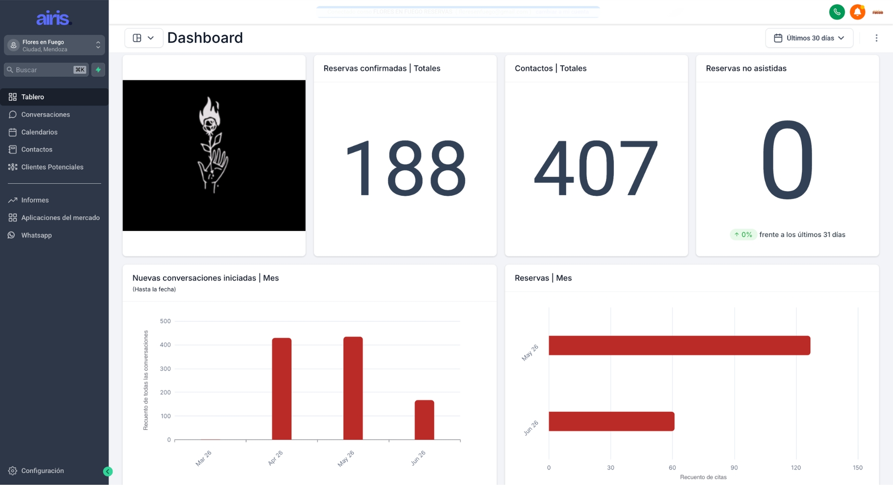
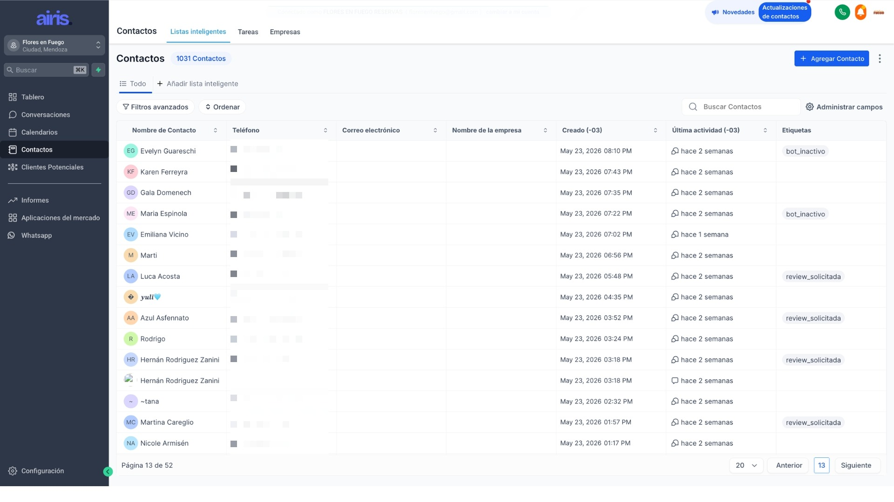

Cada consulta que no respondés a tiempo es una mesa que reserva en otro lado. Y tu equipo no puede hacer todo a la vez, descuidando la calidad del servicio en el salón.
Airis trabaja en WhatsApp e Instagram, las 24 horas, con el tono de tu marca. Para que tu restaurante no pierda una reserva más.

+5 reseñas positivas por día.
El agente pide la reseña en el momento justo: después de una buena experiencia. Tu reputación sube sola.

Un mensaje entra y el sistema hace el resto. Sin que muevas un dedo.
Te mostramos cuántas reservas estás perdiendo hoy y cuánto puede crecer tu restaurante con Airis.